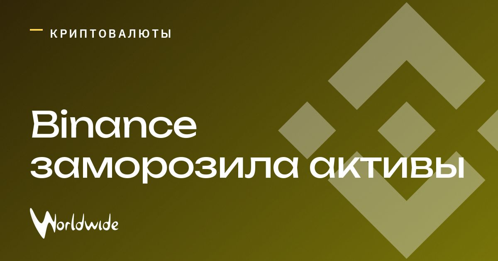

Binance заморозила более $2,5 млрд после сообщений о возможном взломе

Bitcoin и Ethereum опустились до $77 646 и $2 238 после сообщений о возможной атаке на Binance.
Binance расследует инцидент и заморозила более $2,5 млрд цифровых активов, чтобы предотвратить возможную кражу. Сумма блокировок может вырасти.
Обновление
Binance приостановила ввод и вывод криптовалют на время расследования. По данным Reuters, биржа и эмитенты стейблкоинов Circle и Tether заморозили связанные с инцидентом активы примерно на $3 млрд.
По уточнённым данным, Binance считает, что взлом затронул активы примерно на $6,3 млрд. По предварительной версии биржи, злоумышленник получил доступ к ноутбуку инженера и через внутреннюю систему отправил несанкционированные запросы на вывод средств; утечки закрытых ключей кошельков Binance не обнаружила. Биржа пообещала покрыть потери из собственных средств и фонда SAFU.
Источник: Азаттык Азия